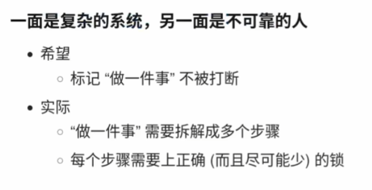
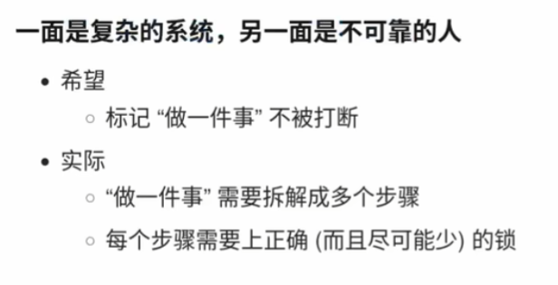

LinkForSharegpt

You:
LinkForSharegpt

You:
{kind=link}
javaScript有哪些异步操作
ChatGPT:
JavaScript 中常见的异步操作包括：
-
回调函数：通过函数作为参数传递，实现在异步操作完成后执行的方式。
javascript setTimeout(() => { console.log('Delayed operation'); }, 1000); -
Promise：用于处理异步操作的对象，可以链式调用
.then()方法处理成功或失败的情况。```javascript let promise = new Promise((resolve, reject) => { setTimeout(() => { resolve('Operation successful'); }, 1000); });
promise.then((result) => { console.log(result); }); ```
-
Async/Await：基于 Promise 的语法糖，提供更简洁和易读的异步代码写法。
```javascript async function fetchData() { let response = await fetch('https://api.example.com/data'); let data = await response.json(); return data; }
fetchData().then((data) => { console.log(data); }); ```
-
事件监听器：通过注册事件监听器来处理异步事件的发生和响应。
javascript document.getElementById('button').addEventListener('click', () => { console.log('Button clicked'); }); -
定时器：如
setTimeout和setInterval，用于延迟执行代码或周期性执行代码。```javascript setTimeout(() => { console.log('Delayed operation'); }, 1000);
setInterval(() => { console.log('Repeated operation'); }, 2000); ```
-
Fetch API：用于发送网络请求，返回 Promise 对象处理响应。
javascript fetch('https://api.example.com/data') .then(response => response.json()) .then(data => console.log(data)) .catch(error => console.error('Fetch error:', error));
这些异步操作使得 JavaScript 能够处理并发任务，提高程序的效率和响应性，特别适合处理网络请求、定时任务和用户交互等场景。
You:
异步操作怎么加入同步点
ChatGPT:
在 JavaScript 中，异步操作本质上是非阻塞的，它们通常不会在执行过程中等待异步操作完成而阻塞整个程序的执行。然而，有时候我们需要在某些异步操作完成后执行特定的同步代码或者确保异步操作的顺序执行。这时可以使用以下方法来实现同步点：
使用 Promise 的 then() 方法#
Promise 提供了一种链式调用的方式，可以在异步操作完成后执行特定的同步代码。通过在 Promise 实例上调用 then() 方法来添加处理函数，确保异步操作完成后执行后续的代码。
async function fetchData() {
let response = await fetch('https://api.example.com/data');
let data = await response.json();
return data;
}
fetchData().then((data) => {
// 在异步操作完成后执行的同步代码
console.log(data);
});
在上述示例中，fetchData() 函数返回的是一个 Promise 对象，可以通过 then() 方法在获取数据后执行后续的同步操作。
使用 Async/Await#
Async 函数结合 Await 关键字提供了一种更简洁、易读的异步编程方式。使用 Async/Await 可以在异步操作中添加同步点，等待异步操作完成后再继续执行后续代码。
async function fetchData() {
let response = await fetch('https://api.example.com/data');
let data = await response.json();
return data;
}
async function main() {
let data = await fetchData();
// 在异步操作完成后执行的同步代码
console.log(data);
}
main();
在这个例子中，main() 函数作为入口函数使用 Async 函数，内部调用了 fetchData() 函数并使用 Await 等待异步操作完成后获取数据，然后执行后续的同步操作。
使用回调函数#
在早期的 JavaScript 异步编程中，使用回调函数是一种常见的方式来实现异步操作的同步点。通过将回调函数传递给异步操作的接口，可以确保在异步操作完成后执行特定的同步代码。
function fetchData(callback) {
fetch('https://api.example.com/data')
.then(response => response.json())
.then(data => {
callback(data); // 异步操作完成后执行回调函数
});
}
fetchData((data) => {
// 在异步操作完成后执行的同步代码
console.log(data);
});
在以上方法中，关键是确保异步操作的结果能够在需要时被处理和使用，而不会由于异步性质而导致执行流程的混乱或错误。 协程并发等概念好文章